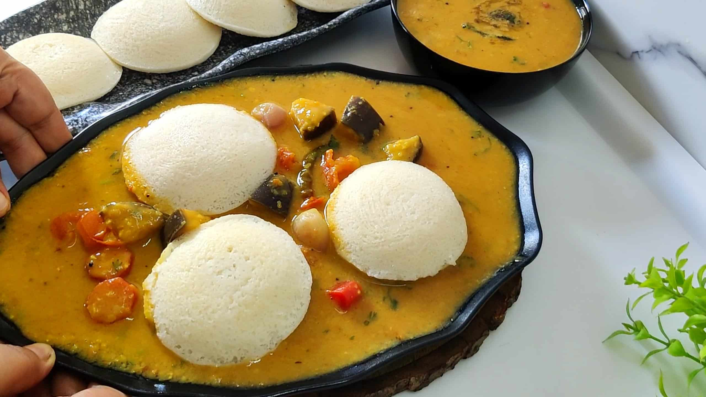
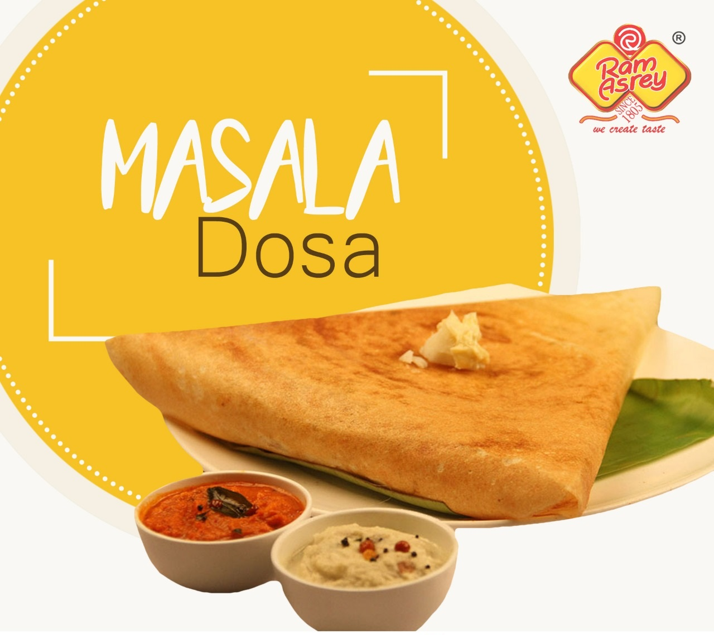
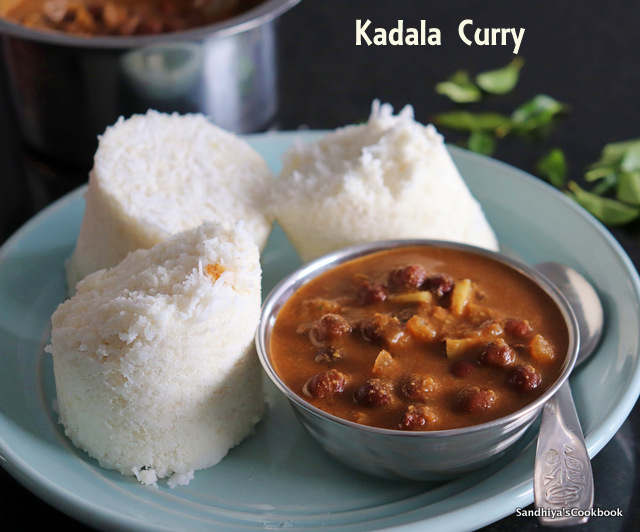

HELLO KERALA!
HERE ARE SOME FAMOUS FOOD FROM KERALA



Veg food which we can found in Kerala is
- ADA PRADHAMAN
- AVIAL
- CHATTIPATHIRI
- ERISSERY
Some non veg food
- AADU ATTIPATHAL
- APPAM AND CRAB MASALA
- DRY FISH CURRY
- AVIAL
- Avial is an Indian dish with origins in the Kerala state of India.
Avial is considered an essential part of the main meal in Kerala (Oonu in Malayalam) and is also served as a delicacy in South India.
- AADU ATTIPATHAL
- Aadu Attipathal is among the most loved mutton dishes in all of Kerala cuisine,
with its hot flavour and juicy texture making the most of the base protein.
A normal meal plate contains
| Sr No |
Dish Name |
| 1 |
Palada Pradhaman. |
| 2 |
Inji Pachdi |
| 3 |
Vendakka Khichdi |
| 4 |
Olan |
| 5 |
Sambar |
| 6 |
Aviyal |